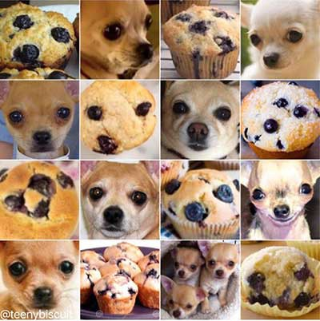

Intro
Machine Learning (ML) is a powerful branch of Artificial Intelligence (AI) that enables computers to learn from data and make predictions or decisions without being explicitly programmed. It’s like a school for machines—training them to recognize patterns in data and apply that knowledge to new, unseen information.
A common example is email spam detection: a sample of emails is labeled as ‘spam’ or ‘not spam’ and an ML model is trained to classify new emails based on patterns it learns from the training data.
Before diving into the details of ML, let’s look at the broader structure:
- Artificial Intelligence (AI) is the overarching field focused on building systems that can perform tasks requiring human-like intelligence.
- Machine Learning (ML) is a subset of AI that uses algorithms to learn from data.
- Deep Learning (DL) is a further subset of ML that uses multi-layered neural networks to model complex data like images, language, and speech.

Types of Machine Learning
- Supervised Learning: The model learns from labeled data, where both inputs and expected outputs are known.
- Example: Predicting whether a tumor is benign or malignant based on medical imaging data.
- Unsupervised Learning: The model finds patterns in unlabeled data.
- Example: Clustering gene expression data to identify subtypes of diseases without prior labels.
- Semi-Supervised Learning: The model learns from a small amount of labeled data combined with a large amount of unlabeled data—useful when labeling is resource-expensive ($), computationally expensive, or generally time-consuming.
- Example: Classifying rare diseases using a limited set of labeled patient records along with a large pool of unlabeled cases.
Use in Biology:
In biology, data is abundant and complex—ranging from genomics, transcriptomics, proteomics, metabolomics, to medical imaging, electronic health records, and clinical trial data. Machine learning helps navigate this complexity by detecting patterns, and automating data analysis at scale—enabling discoveries that would be impossible with traditional computational/statistical methods alone.
ML applications in biotech include:
- Genomics: Identifying disease-associated variants, predicting gene function, or personalizing therapies based on genetic profiles.
- Drug Discovery: Identifying hits from high-throughput compound screens (thousands to millions of compounds), designing novel proteins, predicting drug-target interactions, and optimizing lead compounds.
- kMOL - Github repo
- Elix Inc.
- https://www.nature.com/articles/s41587-024-02127-0
- Medical Imaging: Diagnosing diseases, including cancer, from radiology or pathology images using computer vision models.
- Synthetic Biology: Designing optimized DNA sequences or metabolic pathways with novel functions, using generative ML models.
- https://www.nature.com/articles/s41467-022-32661-x?fromPaywallRec=false
- Epidemiology: Forecasting disease outbreaks or tracking pandemic trends from real-time data.
- Process Optimization: Tools for writing better code, or tracking and querying data across multiple experiments.
A landmark example is AlphaFold: Given just a protein sequence, it predicts its 3D structure with near-experimental accuracy. Trained on databases of known protein structures, AlphaFold has learned the underlying chemical and spatial principles of protein folding—revolutionizing structural biology, accelerating drug discovery, and opening new paths in enzyme design, synthetic biology, and disease understanding.
Read more:
Fun Facts about ML:
- Your phone uses ML every day: for autocorrect, face unlock, voice assistants, and photo sorting.
- ML can generate fake pets, and art: GANs (Generative Adversarial Networks) can create realistic images of animals that don’t exist.
- Feedback can lead to improvement: ML algorithms can learn via trial and error, with feedback helping them become better
- ML creates art: tools like DALL·E and DeepDream generate paintings, music, and surreal images.
Is It Always Perfect?
Not quite. Machine Learning heavily depends on the quality and diversity of the data it’s trained on—and it’s far from flawless. Some examples:
- Medical diagnosis: ML can miss rare conditions or make biased predictions if trained on unbalanced datasets, like those based on one/few ancestries or a single gender.
- Self-driving cars: Struggle with unexpected situations like unusual weather, odd road signs, and unpredictable pedestrians – including in other countries!
- Dog or muffin?: Image classifiers have famously confused chihuahuas with blueberry muffins (in their defense, it’s tricky).

P.S. Good news—machines still need us. Our jobs are safe… for now
Read more: